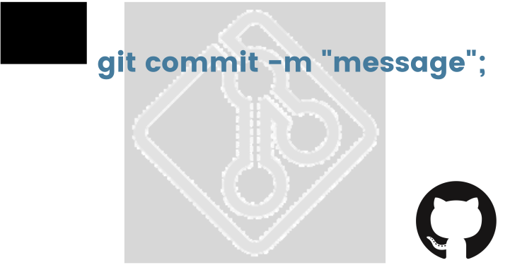

How to write good commit messages?
git commit -m "message".
Piyush Ahir | Aug 15 | 2 min readYou too get confused after updating your code and before pushing it to the main repository about how to commit it with a good message so that if someone revisits my code in the future, then it will help them in understanding the changes you made better. This blog will help you with this, read until the end..
What are commit messages and why are they important?
A commit message is a description of what has been changed in the code and why we made those changes before commiting the updated one. It will become more important when we work in a team on a project and in an organisation where everyone contributes their part, and in that situation, it becomes very difficult how to write right and precise git commit messages.
What message is considered a good commit?
The one which clearly mentions the changes we made, and it will be precise too. Many organisations used their own conventions so that all employees understand it very well, and there are also too many templates available on the internet. Here are some which I found good, and many developers also recommend this, keep the message short and precise, provide necessary context when necessary.
- Feat- a new feature
- Fix- a bug fix
- Docs- changes in documentation
- Style- everything related to styling
- Refactor- code changes that neither fixes a bug nor adds a feature
- Test- everything related to testing
- Chore- updating build tasks, package manager configuration, etc.
We don't do it right all the time, even writing good commit messages is a skill that you will learn with time. One tip is that visit the open source repositories on GitHub and look at how they wrote those messages and what it will be indicating.